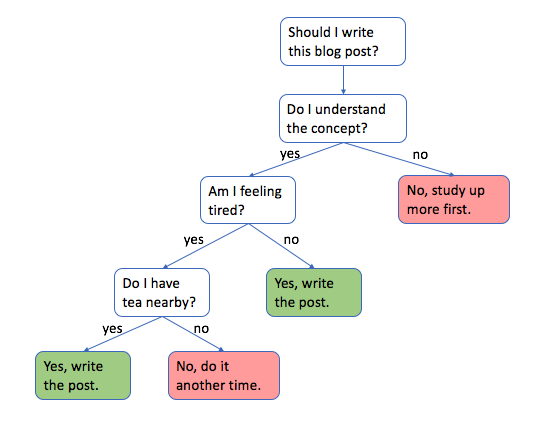
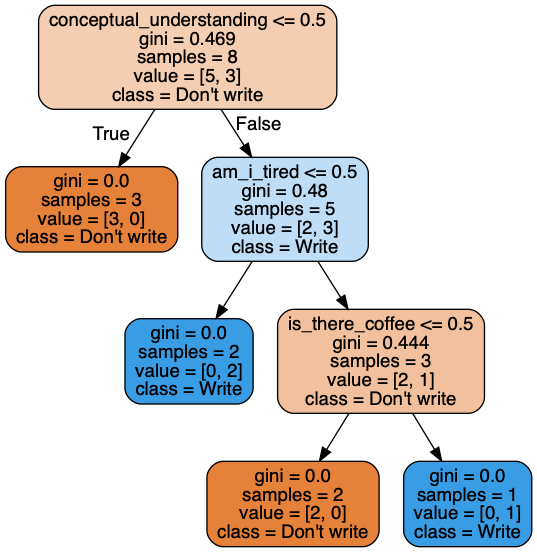

Classification And Regression Trees (CART), i.e. Decision Trees are one of the most popular and well understood machine learning algorithms. Decision trees are super intuitive and interpretable because they mimic how the human brain works. That said, decision trees may lag begind other, more complex machine learning algorithms (sometimes referred to as 'black box algorithms') in accuracy. However, in many situations, like in the context of a business where you can't make certain decisions without being able to explain why (think of a bank giving out loans to individuals), interpretability is much more important than accuracy.
So how do they work? Decision trees are essentially a bunch of if-then-else rules stacked on top of each other. Here is a silly example:
from IPython.display import Image
Image(filename='decision_tree.png', width=450)

The decision tree algorithm operates by coming up with rules and splitting the data accordingly at each node in a sequential manner. But how does the algorithm figure out the logical order of rules? In the above case, how can it know that my understanding of the concept is the number one question that must be answered yes, before any other thing such as whether or not I have tea nearby?
Answer: with the help of some good old math! Decision trees are built in a top-down fashion through finding the attribute that maximizes something called information gain at each split. Information gain is at maximum when the attribute in question is perfectly homogenous, i.e. pure. Information gain is at minimum when the attribute in question is perfectly heterogenous. In the context of a binary attribute that can be either yes or no, a perfectly homogenous class would be composed of all yes's, and a perfectly heterogenous class would be composed of 50% yes's and 50% no's.
The formula for information gain is as follows:
This can look intimidating at first but it's actually quite simple. The function H() is something called gini impurity. To compute information gain, we simply deduct the weighted sum of the gini impurities of the children nodes from the gini impurity of the parent node. The attribute that yields the highest IG when split to its children gets chosen as the root node. This process continues through all the nodes until there is no way to further split the tree, which is when there is one item left in each leaf node. When that is the case, the decision tree is considered complete.
Note: Gini impurity is used interchangeably with something called entrophy.
import numpy as np
import pandas as pd
blog_post = pd.DataFrame({'conceptual_understanding': ['No', 'No', 'Yes', 'Yes', 'Yes',
'No', 'Yes', 'No', 'Yes', 'Yes'],
'am_i_tired': ['No', 'Yes', 'Yes', 'Yes', 'No',
'Yes', 'No', 'Yes', 'Yes', 'Yes'],
'is_there_coffee': ['Yes', 'Yes', 'No', 'No', 'Yes',
'No', 'No', 'Yes', 'Yes', 'Yes'],
'write_blog': ['No', 'No', 'No', 'No', 'Yes',
'No', 'Yes', 'No', 'Yes', 'Yes']
})
from sklearn.tree import DecisionTreeClassifier
from sklearn_pandas import DataFrameMapper, CategoricalImputer
from sklearn.preprocessing import LabelEncoder, LabelBinarizer
from sklearn.model_selection import train_test_split
mapper = DataFrameMapper([
('conceptual_understanding', LabelEncoder()),
('am_i_tired', LabelEncoder()),
('is_there_coffee', LabelEncoder()),
('write_blog', LabelEncoder())
], df_out=True)
blog_post = mapper.fit_transform(blog_post)
X = blog_post.iloc[:, :-1]
y = blog_post['write_blog']
X_train, X_test, y_train, y_test = train_test_split(X, y, random_state=42, test_size=0.2)
dt = DecisionTreeClassifier()
dt.fit(X_train, y_train)
DecisionTreeClassifier(class_weight=None, criterion='gini', max_depth=None,
max_features=None, max_leaf_nodes=None,
min_impurity_decrease=0.0, min_impurity_split=None,
min_samples_leaf=1, min_samples_split=2,
min_weight_fraction_leaf=0.0, presort=False, random_state=None,
splitter='best')
from IPython.display import Image
import pydotplus
from sklearn import tree
dot_data = tree.export_graphviz(
dt,
out_file=None,
filled=True,
rounded=True,
feature_names=X_train.columns,
class_names=['Don\'t write', 'Write'],
proportion=True
)
graph = pydotplus.graph_from_dot_data(dot_data)
Image(graph.create_png())
